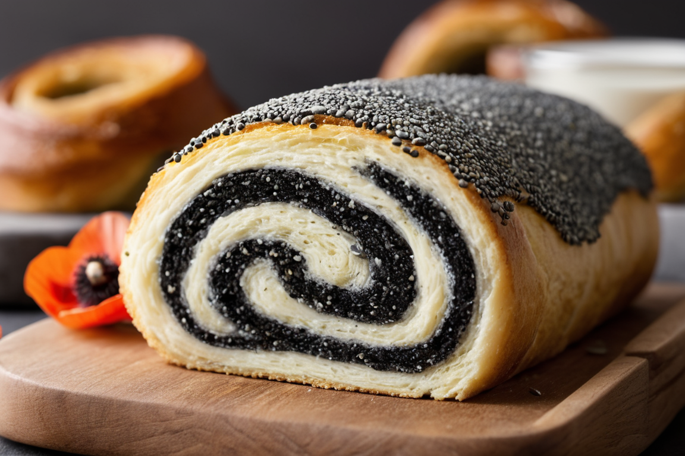

Hozzávalók:
tésztához:
- 500 g liszt
- 20 g élesztő
- 250 mllangyos tej
- 100 g vaj vagy margarin
- 100 g cukor
- 2 tojás
- 1 Csipet só
- Vaníliás cukor ízlés szerint
- Reszelt citromhéj (opcionális)
- 150 g darált mák
töltelékhez:
- 150 g darált mák
- 100 g porcukor
- 1 dl tej vagy tejszín
- Reszelt citromhéj
- Vaníliás cukor ízlés szerint
Elkészítés:
- Az élesztőt keverd el a langyos tejben egy tálban, majd hagyd állni pár percig, amíg feloldódik.
- A lisztet szitáld egy nagy tálba, és keverd össze a cukorral, csipet sóval, vaníliás cukorral és reszelt citromhéjjal (ha használsz).
Készíts egy mélyedést a liszted közepén, és öntsd bele az élesztős tej keverékét, valamint a felvert tojásokat.
- Gyúrd össze a tésztát, majd add hozzá a puha vajat vagy margarint, és gyúrd tovább, amíg sima, rugalmas tésztát nem kapsz. Ha szükséges, adj hozzá még lisztet vagy tejet.
- Fedd le a tésztát egy konyharuhával, és hagyd kelni meleg helyen kb. 1 órán keresztül, amíg duplájára nem dagad.
- Közben készítsd el a tölteléket. Egy kisebb tálban keverd össze a darált mákot a porcukorral, reszelt citromhéjjal és vaníliás cukorral. Adj hozzá annyi tejet vagy tejszínt, hogy könnyen kenhető tölteléket kapj.
- Amikor a tészta megkelt, lisztezett felületen nyújtsd ki téglalap alakúra, majd kend rá a mákos tölteléket.
- Tekerd fel a tésztát szorosan, majd vágd kb. 2-3 cm vastag szeletekre.
- Helyezd a szeleteket sütőpapírral bélelt tepsire, és hagyd őket pihenni még kb. 15-20 percig.
- Előmelegített sütőben süsd őket 180°C-on kb. 25-30 percig, vagy amíg aranybarnák lesznek.
- Ha kisültek, hagyd őket kihűlni, majd díszítheted még porcukorral vagy vaníliás cukorral.